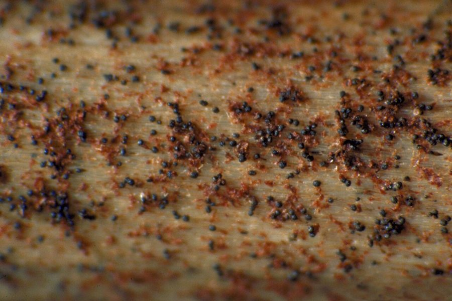

चारकोल सड़नCharcoal Rot
Macrophomina phaseolina · Botryosphaeriaceae · FNG-0034

- Scientific name वैज्ञानिक नाम
- Macrophomina phaseolina (Tassi) Goid.
- Family कुल
- Botryosphaeriaceae
- Hindi हिंदी
- चारकोल सड़न
- Local names स्थानीय नाम
- charcoal rot, charcoal sadan, macrophomina
- Status here यहाँ की स्थिति
- native
- Movement आवागमन
- Resident, here all year
- Known from कहाँ दर्ज
- Others have published records from the wider Awadh–Purvanchal plain, none yet from Basti–Ayodhya अवध–पूर्वांचल से दूसरों के प्रकाशित अभिलेख, बस्ती–अयोध्या से अभी नहीं
- IUCN IUCN
- not evaluated
- Review समीक्षा
- audited and independently read
When to look कब देखें
Expected mainly in August, September, October. मुख्यतः अगस्त, सितंबर, अक्टूबर में अपेक्षित।
चारकोल सड़न / Charcoal Rot
Macrophomina phaseolina (Tassi) Goid. — Botryosphaeriaceae
चारकोल सड़न — दिसंबर-जनवरी में रबी मौसम में मूंगफली और तिल में, या गर्मी की फसलों में सूखे के समय, तने के अंदर काली सड़न जो कोयले के जैसी दिखती है। बीमार पौधे अचानक मुरझा जाते हैं, फली या दाने भरते नहीं हैं, और पूरा पौधा मर सकता है। यह बीमारी सूखे और गर्मी से बिगड़ती है, इसलिए पानी की कमी वाले साल में बहुत नुकसान होता है।
Quick Identification त्वरित पहचान
| Feature | Description |
|---|---|
| External wilting | Plant wilts suddenly even when soil appears moist |
| Stem discoloration | Cut stem lengthwise: vascular tissues appear dark brown to black |
| Charcoal appearance | Internal rot looks like dark charcoal; hence the name |
| Sclerotia | Small, hard, black bodies (mustard-seed size) visible in vascular tissue |
| Root and collar rot | Base of plant and roots often affected; dark, sunken cankers |
| Advanced stage | Entire plant wilts and dies; roots become brittle and hollow |
Field tip: In August–September, look for sudden wilting in groundnut or sesame plants during dry spells. Cut a wilted plant at the base; if the vascular tissue is black instead of white, it is charcoal rot. Under water stress, affected plants die without recovery.
हिंदी — कैसे पहचानें: पेड़ अचानक मुरझा जाता है, भले ही मिट्टी में नमी हो। तने को काटो तो अंदर से काली सड़न दिखती है। सूखे के मौसम में। पानी देने से बेहतर नहीं होता।
Morphology and Symptomatology आकृति और लक्षण
Fungal structures (visible with microscope and to naked eye):
| Structure | Appearance |
|---|---|
| Sclerotia | Black, round to irregular, 1–3 mm; visible in vascular tissue and on host surface |
| Mycelium | Dark brown, septate; grows through vascular elements |
| Pycnidium | Fruiting structure producing conidia (spores); embedded in tissues |
| Conidium | Dark, oval, 20–40 × 10–15 µm; produced in mucilaginous matrix |
Disease progression:
- Infection: Occurs through roots or wounds; mycelium colonizes vascular system
- Colonization: Plugs vascular vessels; causes wilting despite soil moisture
- Sclerotium formation: Black sclerotia accumulate in vascular tissue
- Plant death: Vascular plugging causes sudden death, especially under water stress
Life Cycle / Phenology जीवन चक्र
In eastern UP (groundnut crop: April–September; sesame: June–October):
| Stage / Month | Event | Notes |
|---|---|---|
| April–June | Crop planted; early growth phase; soil moisture adequate | Early infection rare; fungus remains dormant in soil |
| June–August | Crop grows; monsoonal rains; high humidity | Fungus colonizes roots; little disease visible due to adequate water |
| August–September | CRITICAL PERIOD — Monsoon ends; soil dries; water stress triggers symptoms | Plants show wilting; vascular tissue blackens; death can be rapid |
| September–October | Crop matures or dies; infected plants fail to fill pods/grains | Sclerotia form in dead tissue; persist in soil for years |
| After harvest | Infected crop residue left in field; sclerotia survive in soil and residue | Inoculum remains viable for 5+ years in field soil |
हिंदी — जीवन चक्र: मिट्टी में बीज की तरह सोता है। बीज लगाते समय प्रवेश करता है। सूखे के मौसम में लक्षण दिखता है। पौधा मरने के बाद मिट्टी में वापस जाता है।
Ecology and Substrate पारिस्थितिकी और आधार
Soilborne pathogen: Macrophomina phaseolina is a polyphagous, soilborne fungus that survives as sclerotia in soil and crop residue.
Moisture and temperature requirements:
- Infection: Optimal at 25–35°C; occurs through roots or wounds
- Symptom expression: Aggravated by water stress (drought); disease is silent in well-watered plants
- Sclerotium formation: Occurs under water stress
- Survival: Sclerotia persist in soil for 5–10 years; resistant to desiccation and temperature extremes
Host range: Highly polyphagous; infects groundnut, sesame, sorghum, maize, cowpea, bean, and many other crops.
Transmission:
- Primary: Sclerotia in soil infect roots directly
- Secondary: Mycelium spreads through vascular system; can reach other plants via soil contact
- No spore dispersal: Conidia are produced but not the primary inoculum
Agricultural / Human Relevance कृषि प्रासंगिकता
Economic impact:
- Yield loss: can be heavy in a bad season, depending on variety, timing and weather.
- Severity: In drought years, losses can be catastrophic in susceptible crops
- Long-term impact: Sclerotia persist in soil for years, making rotations less effective
Management — in order of priority:
- Water management (MOST IMPORTANT):
- Irrigation: Maintain adequate soil moisture; plants are far less susceptible when water is available
- Drainage: Avoid waterlogged conditions in monsoon; charcoal rot is less severe with good drainage
- Mulching: Conserves soil moisture; reduces plant water stress
- Resistant varieties (MODERATELY EFFECTIVE):
- Groundnut: TG 37A, ICGS 76, GJC 2 (have tolerance)
- Sesame: RT 46, Tilottama (have partial resistance)
- Use certified seed
- Cultural practices:
- Field sanitation: Remove and burn infected crop residue; do not use for animal bedding
- Crop rotation: Avoid susceptible crops (groundnut, sesame) in same field for 2–3 years
- Deep ploughing: Buries sclerotia; reduces surface inoculum for next season
- Avoid physical damage: Handle plants carefully; avoid soil cultivation during flowering, which increases wounding
- Fungicide treatment (LIMITED EFFICACY):
- Seed treatment: Carbendazim or Thiram treatment can reduce early infection but does not prevent water-stress-induced symptoms
- Soil treatment: Trichoderma or other bioagents applied at planting show variable results
- Cost: Limited economic benefit in drought years
हिंदी — रोकथाम: सूखे का समय नहीं अगर पानी दे सको। पुरानी पराली जला दो। अगली फसल में दूसरी फसल लगाओ। गहरी खुदाई करो।
Expected Locally स्थानीय रूप से अपेक्षित
Not a field record. Written from published accounts for eastern Uttar Pradesh. No confirmed local sighting yet — if you have seen it, that is what the atlas needs.
अभी तक स्थानीय पुष्टि नहीं। यह विवरण प्रकाशित स्रोतों से है, किसी अवलोकन से नहीं।
Charcoal rot is expected in Basti and Ayodhya districts in groundnut, sesame, and sorghum fields, particularly during drought years or water-stressed periods. Disease severity varies with inoculum level in soil and availability of irrigation. In drought years with unirrigated crops, losses can be severe. Irrigated fields show minimal disease. GBIF holds published records from the wider Awadh–Purvanchal plain.
Distribution वितरण
Global range: Found in tropical and subtropical regions worldwide, particularly in semi-arid areas; most important in Africa and Asia.
In India: Present in all rainfed and semi-arid crop-growing regions; endemic in groundnut-growing states.
In Uttar Pradesh: Found in all groundnut- and sesame-growing areas; eastern UP has scattered incidence.
In Basti district / eastern UP: Expected in rainfed groundnut and sesame fields, particularly during drought years.
Research Questions शोध प्रश्न
- In your village, what percentage of groundnut plants show charcoal rot symptoms in August–September? / आपके गाँव में अगस्त-सितंबर में कितने प्रतिशत मूंगफली के पौधों में चारकोल सड़न दिखता है? — Survey 5 farmers; examine 10 plants per field.
- Do irrigated groundnut fields show less charcoal rot than rainfed fields in the same area? — Compare two adjacent fields (one irrigated, one rainfed).
- How long does the fungus survive in soil after an infected crop is removed? — Plant groundnut in a field with removed infected residue; monitor disease over 3 seasons.
- Which groundnut varieties are most affected by charcoal rot in your village? — Compare symptoms across varieties in the same field.
- Does crop rotation with non-susceptible crops reduce charcoal rot in the next groundnut season? — Compare a field rotated with wheat vs. one continuously planted to groundnut.
Similar Species मिलती-जुलती प्रजातियाँ
| Disease | How to tell apart | हिंदी |
|---|---|---|
| Wilt (bacterial or vascular) | Plant wilts; vessels discolored but not black; faster death | पूरा पत्ता पीला; वाहिकाएं भूरी न कि काली |
| Dry Root Rot (Fusarium spp.) | Root rot but vascular tissue brown, not black; slow decline | सड़न होती है पर धीरे; जड़ें ही ज़्यादा |
| Root Knot Nematode | Galls visible on roots; above-ground wilting is gradual | जड़ों पर गाँठें; धीरे-धीरे कमजोर |
Field rule: Sudden wilting in water-stressed groundnut or sesame plants; cut stem shows black vascular tissue; no recovery with watering = charcoal rot.
Taxonomy & Classification वर्गीकरण
Original description. First described in 1912; named Macrophomina phaseolina by Gottlieb in Mykol. Zentralblatt, vol. 3, p. 169.
Subspecies. No subspecies are formally recognized; high genetic diversity within the species.
Family and order placement. Order Botryosphaeriales, family Botryosphaeriaceae. Macrophomina is a genus of plant pathogens causing root and stem rots.
Phylogenetic notes. Macrophomina phaseolina shows cryptic speciation; multiple lineages have been identified through molecular work, with differing host specificities and virulence.
IUCN status rationale. Not evaluated. As an obligate plant pathogen, its conservation status is not applicable.
Photo Gallery फोटो गैलरी
Photos needed आवश्यक फोटो
- [ ] Wilted groundnut plant in field during drought (मुरझाया हुआ पौधा)
- [ ] Cross-section of stem showing black vascular tissue (तने का कट)
- [ ] Sclerotia on infected root surface (काली सड़न)
No photos yet — add field photos to media/species/charcoal_rot/ and run node scripts/sync_photos.js.
References संदर्भ
- Gottlieb, J. (1912). Mykol. Zentralblatt, vol. 3, p. 169. [original description]
- Mengistu, A., Ray, J.D. & Smith, J.R. (2007). Charcoal rot of soybean in the mid-South USA and progresses toward integration of host resistance and other management strategies. Canadian Journal of Plant Science 87(4): 825–836.
- Gupta, G.K., Sharma, S.K. & Ramteke, R. (2012). Biology, epidemiology and management of the pathogenic fungus Macrophomina phaseolina (Tassi) Goid. with special reference to sunflower. Journal of Phytopathology 160(6): 1–12.
- Indian Council of Agricultural Research — Directorate of Groundnut Research (2020). Management of Groundnut Diseases. ICAR-DGR, Junagadh.
- National Institute of Plant Health Management (2019). Charcoal Rot Management in Rainfed Crops. NIPM, Hyderabad.
- GBIF Occurrence Data — Macrophomina phaseolina, India (2026).
Source file: species/fungi/molds/charcoal_rot.md